Mockups with a real article from the fetch (12,19 €, no reviews) and four players: Dana is closest. Each look: the article alone, guessing (Ana and Dana have sent), the reveal.
Photo large on the left; the reveal draws a number line from 0 to twice the price, each guess as an avatar pin, the price as a flag.
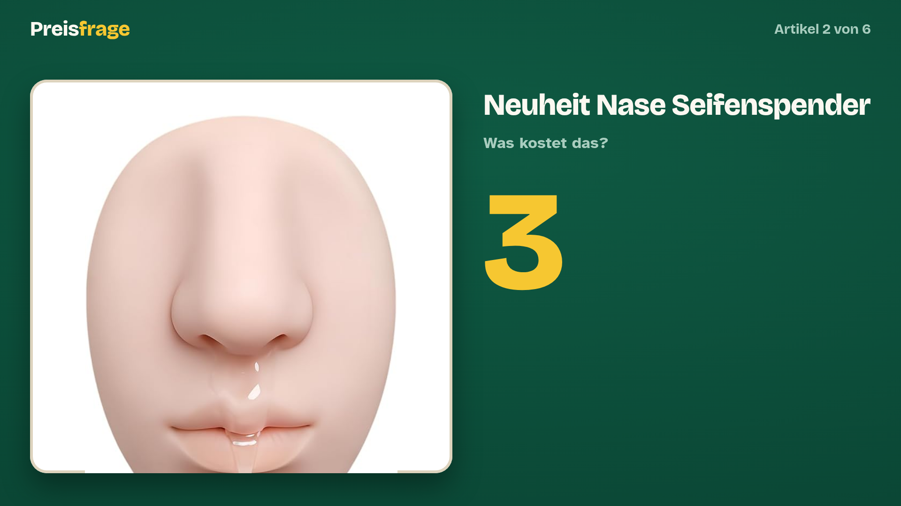
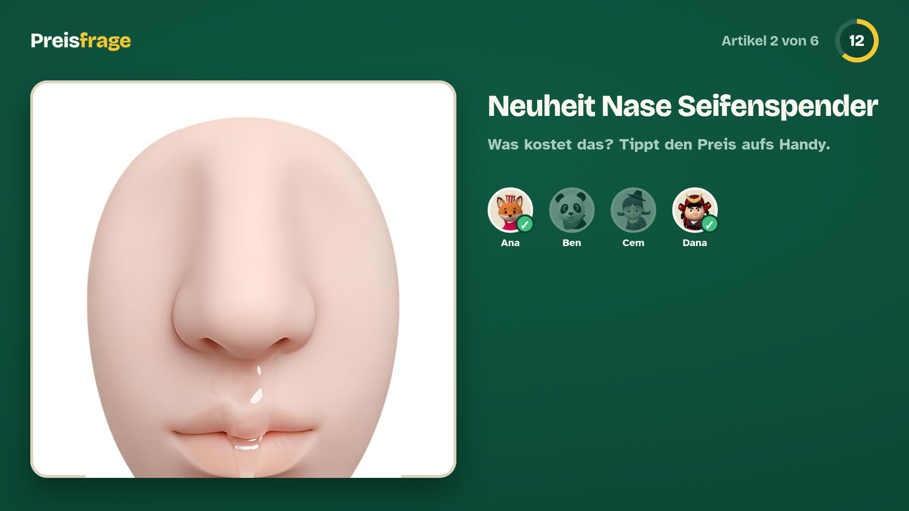
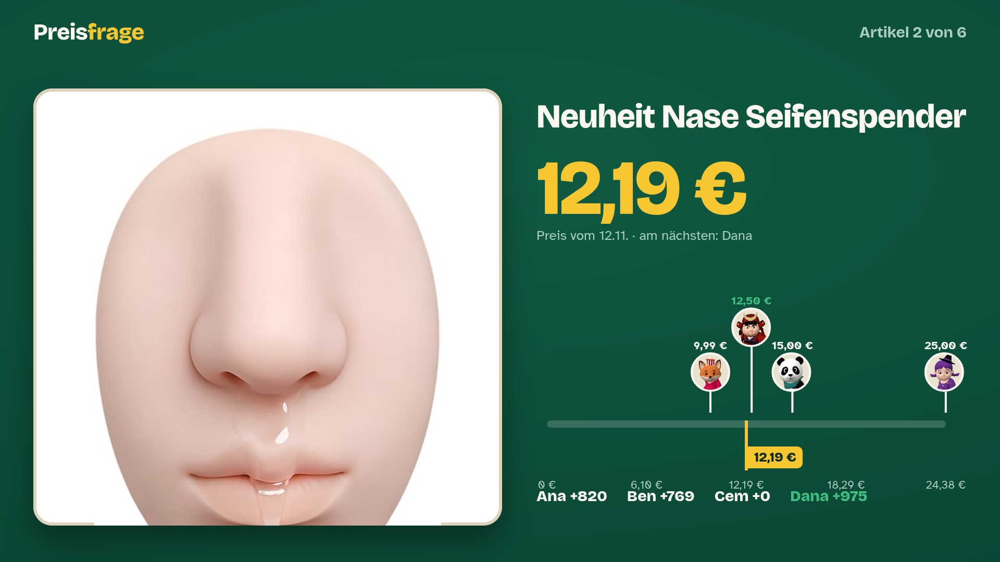
The article on a pedestal in a spotlight; the reveal lists everyone sorted by distance, with their guess, how far off and the points.
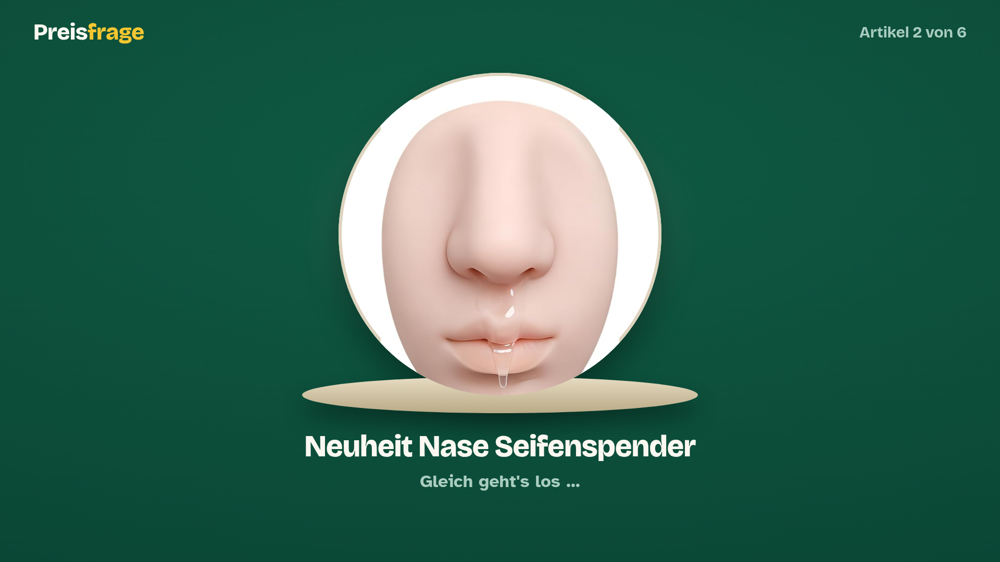
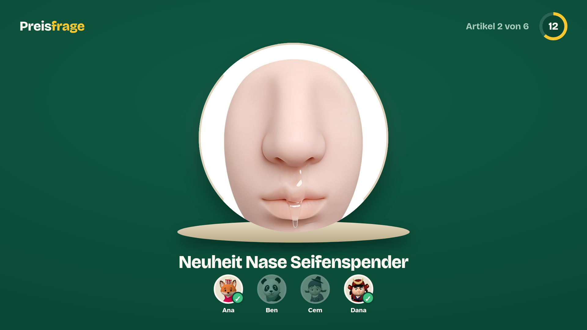
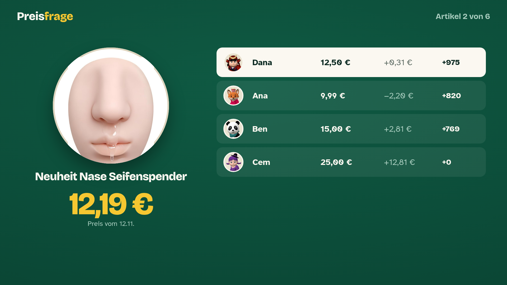
The article on a hanging paper price tag whose price field fills in red at the reveal; the guesses sit on a wooden ruler.
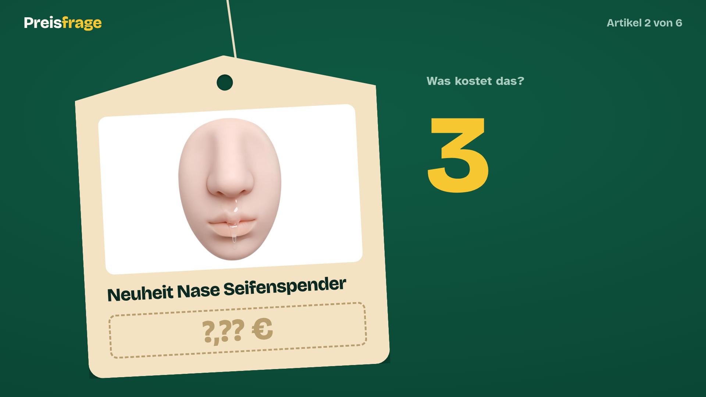
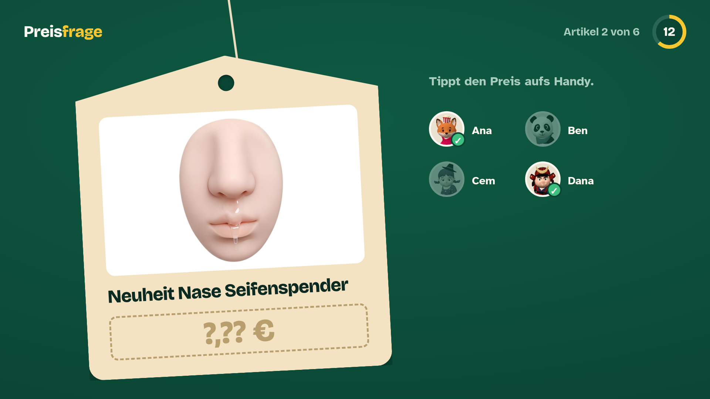
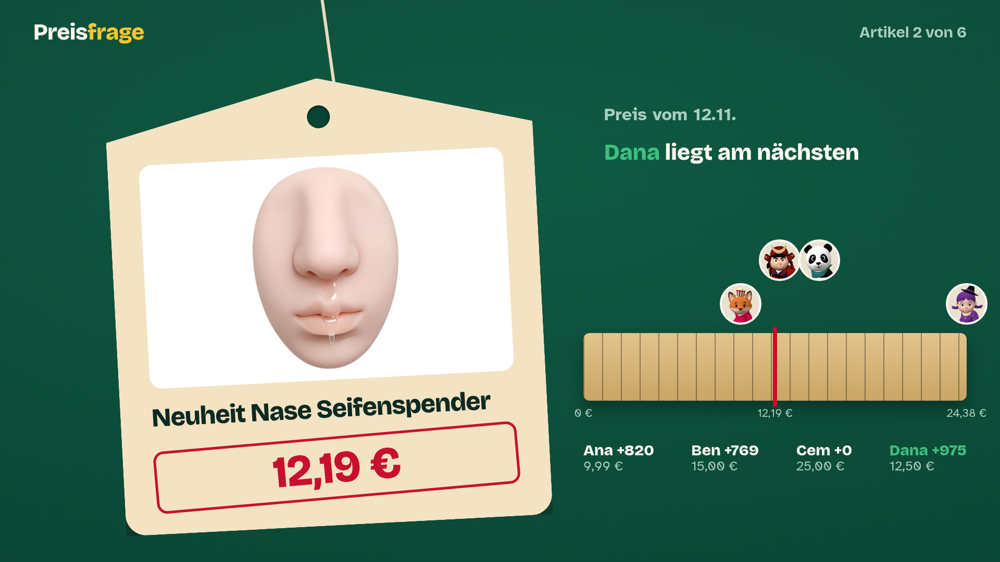
K1: one field, typed like a calculator with a comma key. K2: euros and cents in two fields, the Cent key moves to the second.
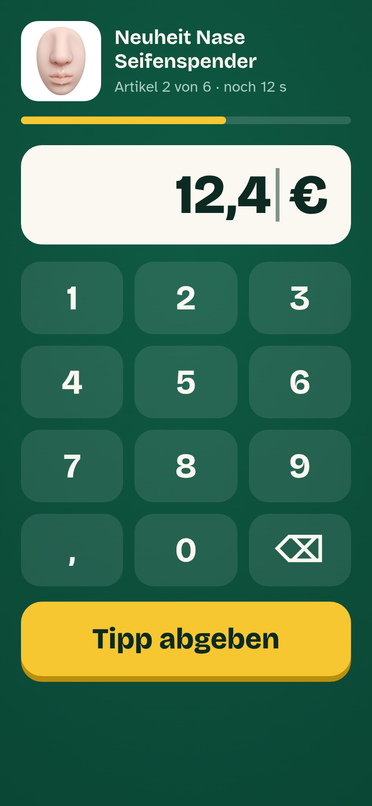
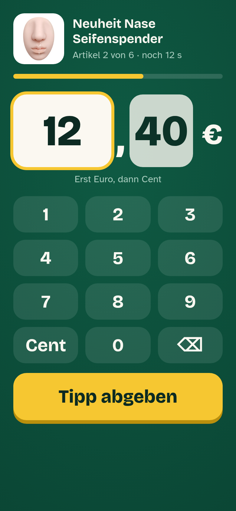